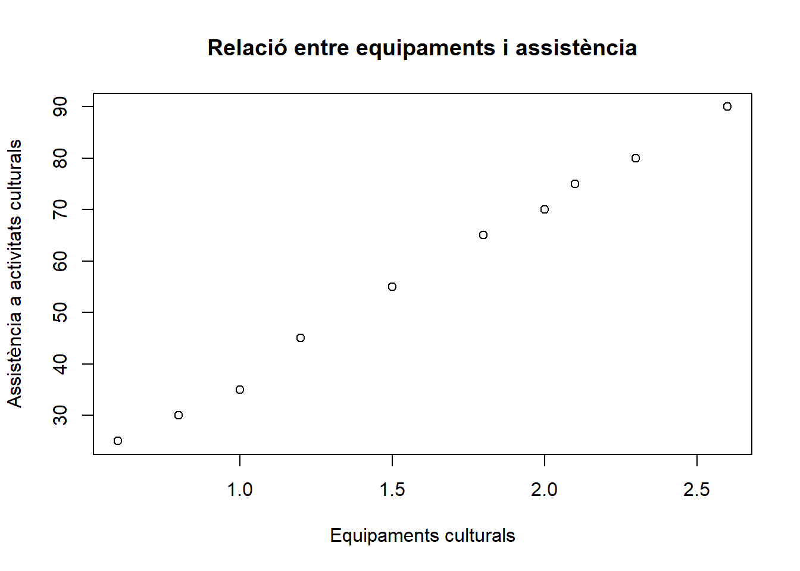
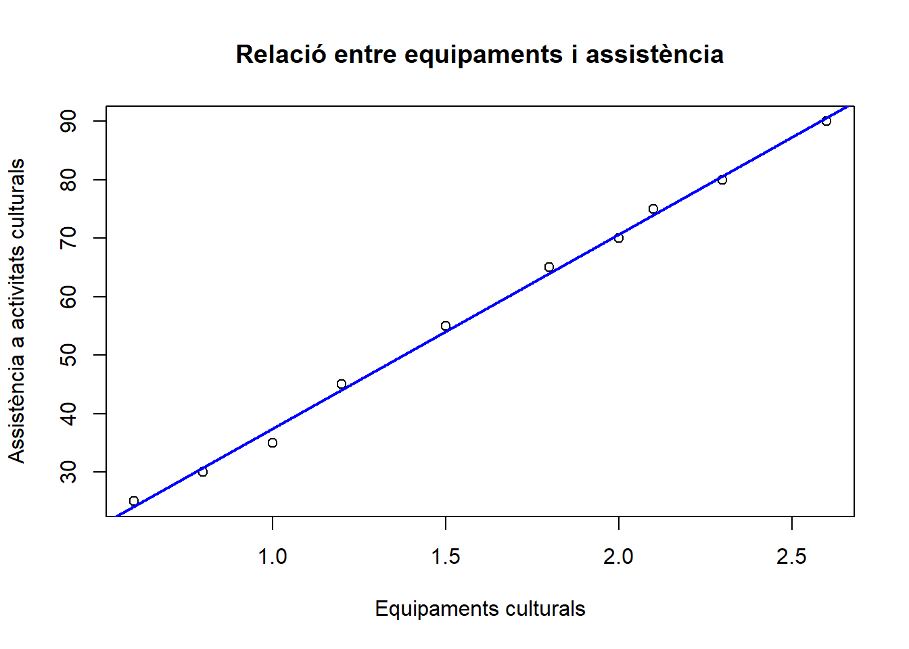
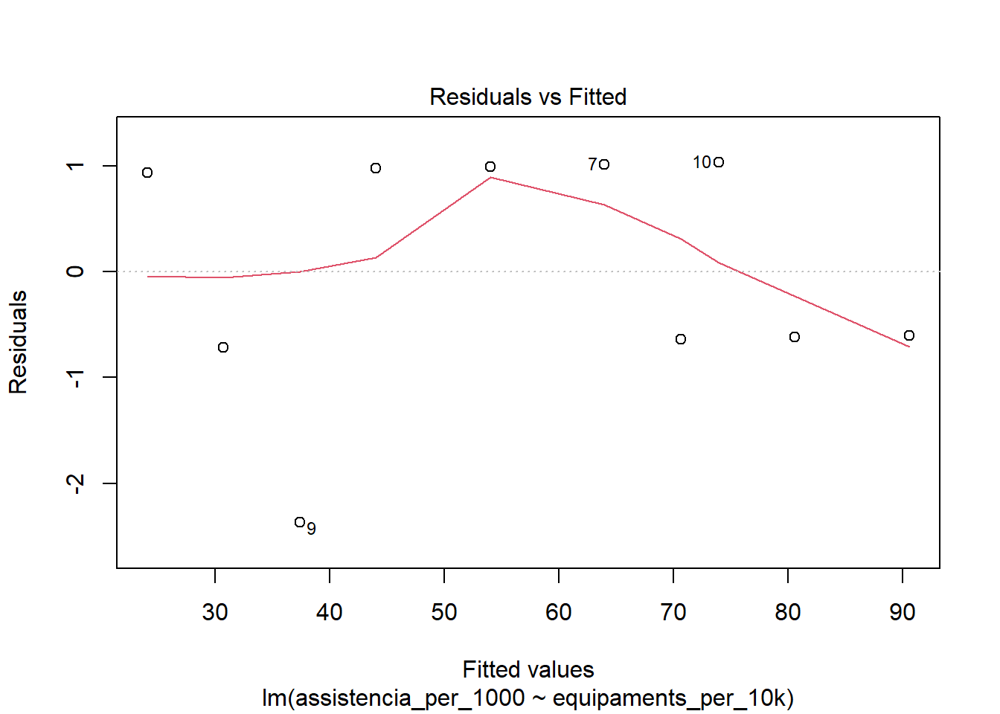
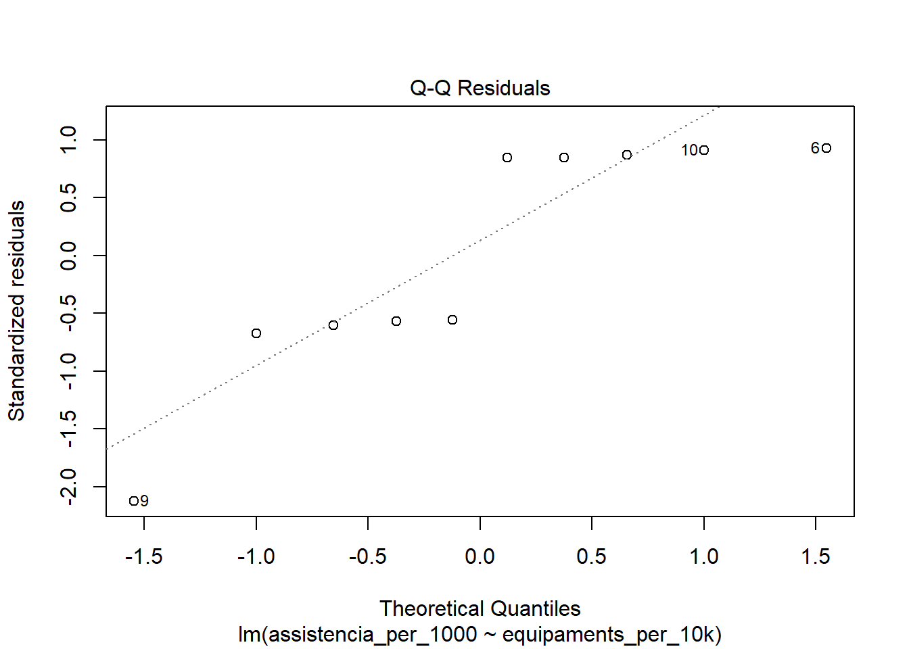
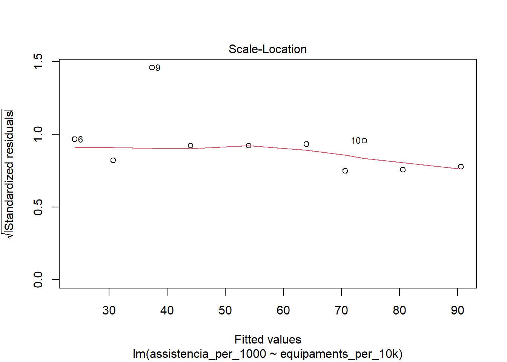
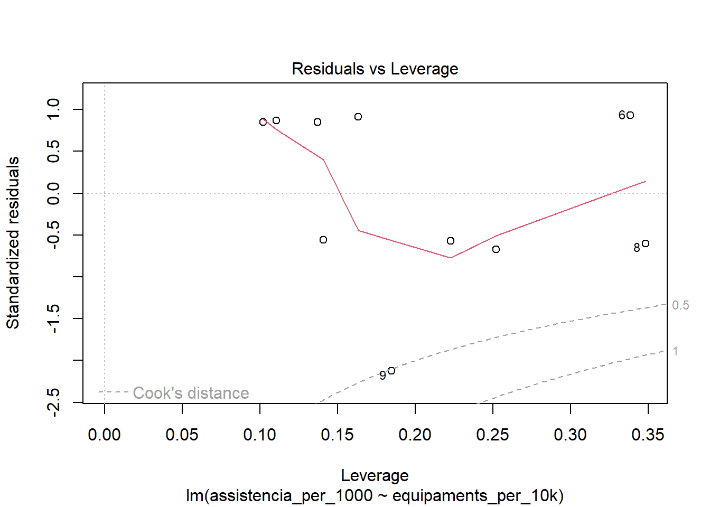

cultura <- data.frame(municipi = paste0("Municipi_", 1:10),
equipaments_per_10k = c(1.2, 0.8, 2.0, 1.5, 2.3, 0.6, 1.8, 2.6, 1.0, 2.1),
assistencia_per_1000 = c(45, 30, 70, 55, 80, 25, 65, 90, 35, 75))
culturaRegressió
1 Introducció a l’aprenentatge automàtic
Fins ara ens hem centrat a explorar i visualitzar dades: entendre com es distribueixen les variables, detectar relacions i representar-les gràficament. A partir d’ara, farem un pas més enllà i entrarem en el camp de l’aprenentatge automàtic (machine learning), que té com a objectiu construir models capaços de predir o classificar automàticament a partir de dades.
Dins de l’aprenentatge automàtic, es distingeix habitualment entre dos grans enfocaments:
- aprenentatge no supervisat: les dades no inclouen una variable «resposta» coneguda; l’objectiu és descobrir patrons o estructures ocultes en les dades (per exemple, agrupar clients amb comportaments similars sense saber prèviament a quin grup pertanyen).
-aprenentatge supervisat: disposem d’una variable «resposta» coneguda per a cada observació, i l’objectiu és construir un model que aprengui la relació entre les variables predictores i aquesta resposta, de manera que puguem predir-la per a noves observacions on encara no la coneixem. És en aquest segon enfocament en el que centrarem els propers temes.
1.1 Regressió i classificació
Dins de l’aprenentatge supervisat, la naturalesa de la variable resposta determina el tipus de problema al qual ens enfrontem:
-quan la variable resposta és quantitativa (per exemple, un preu, una temperatura o un nivell d’assistència), parlem d’un problema de regressió. L’objectiu és predir un valor numèric el més aproximat possible al valor real.
-quan la variable resposta és categòrica (per exemple, si un client serà morós o no, si un correu és spam o no, o si un bolet és comestible o verinós), parlem d’un problema de classificació. L’objectiu és predir a quina categoria pertany cada observació.
Cal fer, però, una petita matisació: existeix un mètode anomenat regressió logística que, malgrat el seu nom, s’utilitza per resoldre problemes de classificació (habitualment amb dues categories, com «sí/no» o «morós/no morós»). S’anomena «regressió» perquè, internament, el model estima una equació de tipus lineal per calcular la probabilitat que una observació pertanyi a una categoria determinada. Aquesta probabilitat es converteix després en una predicció categòrica. És, per tant, un pont natural entre els dos mons: tècnicament és una regressió, però la seva finalitat pràctica és la classificació.
Als propers temes veurem exemples de tots dos tipus de problemes: la regressió lineal (simple i múltiple) ens permetrà predir variables quantitatives, mentre que els arbres de decisió i els classificadors bayesians s’utilitzen habitualment per a problemes de classificació.
1.2 Conjunt d’entrenament i conjunt de test
Un dels principis fonamentals de l’aprenentatge automàtic és que un model no s’ha d’avaluar amb les mateixes dades amb les que s’ha construït. Si ho féssim així, el model podria semblar molt precís simplement perquè ha «memoritzat» les particularitats d’aquelles dades concretes, sense que això garanteixi que funcionarà bé amb dades noves.
Per evitar-ho, és habitual dividir el conjunt de dades disponible en dues parts:
-conjunt d’entrenament (training set): la part de les dades que s’utilitza per construir o «entrenar» el model (normalment, entre un 70% i un 80% de les dades disponibles).
-conjunt de test (test set): la part restant de les dades, que no s’utilitza durant la construcció del model, sinó únicament per avaluar-ne el rendiment amb observacions que el model no ha «vist» prèviament.
Aquesta divisió ens permet obtenir una estimació més realista de com es comportarà el model quan s’apliqui a dades noves, que és, al cap i a la fi, el seu objectiu últim.
1.3 Sobreajust (overfitting)
Un dels riscos més habituals a l’hora de construir un model és el que es coneix com a «sobreajust» (overfitting). Es produeix quan un model s’ajusta tan estretament a les particularitats del conjunt d’entrenament que perd capacitat de generalitzar a dades noves. Un model amb sobreajust sol mostrar un rendiment excel·lent sobre el conjunt d’entrenament, però un rendiment molt pitjor sobre el conjunt de test.
El cas contrari és el de l’«infraajust» (underfitting), en el qual el model és massa simple per captar els patrons rellevants de les dades, i per tant obté un rendiment mediocre tant en el conjunt d’entrenament com en el de test.
2 Regressió
La regressió és un conjunt de tècniques estadístiques que permeten modelitzar la relació entre una o més variables independents (o explicatives) i una variable dependent (o resposta).
En funció de quantes variables explicatives tenim i quin tipus de variable volem predir, podem distingir tres grans tipus de regressió:
regressió lineal simple: s’utilitza quan volem explicar o predir una variable quantitativa a partir d’una única variable predictora, també quantitativa, assumint que la relació entre elles és aproximadament lineal (una recta).
regressió lineal múltiple: és una extensió de la regressió lineal simple en què la variable dependent quantitativa s’explica a partir de dues o més variables predictives, també quantitatives.
regressió logística: s’utilitza quan la variable dependent no és quantitativa sinó categòrica.
En els següents apartats desenvoluparem les dues primeres categories (regressió lineal simple i múltiple).
3 Regressió lineal simple
Suposem que volem analitzar si la disponibilitat d’equipaments culturals (biblioteques, centres cívics, teatres, museus, etc.) en un municipi està relacionada amb l’assistència a activitats culturals.
Variable independent (X): Equipaments culturals per 10.000 habitants
Variable dependent (Y): Assistència anual a activitats culturals per 1.000 habitants
Intuitivament, podem pensar que, a més equipaments per habitant, més oportunitats i, per tant, més assistència a activitats culturals (tot i que també hi poden influir altres factors com renda, edat, turisme, programació, transport, etc.).
La taula mostra les dades de les dues variables per a una mostra de 10 municipis.
La regressió lineal simple modelitza aquesta relació amb una equació del tipus:
\[ Y = a + \beta_1 X \]
On:
- \(a\) és la intersecció (intercept, valor esperat de Y quan X = 0)
- \(\beta_1\) és el pendent (canvi mitjà en Y per cada unitat addicional de X)
Per visualitzar la possible relació, una bona idea és representar les dades en un diagrama de dispersió.
plot(cultura$equipaments_per_10k, cultura$assistencia_per_1000,
xlab = "Equipaments culturals",
ylab = "Assistència a activitats culturals",
main = "Relació entre equipaments i assistència")
El model que volem ajustar és el següent:
\[ Assistència = a + \beta_1 \cdot Equipaments \]
Calculem el model amb R fent servir la funció lm. Aquesta és una funció disponible en R base, no cal instal·lar cap paquet addicional:
model_cultura <- lm(formula = assistencia_per_1000 ~ equipaments_per_10k,
data = cultura)
summary(model_cultura)
Call:
lm(formula = assistencia_per_1000 ~ equipaments_per_10k, data = cultura)
Residuals:
Min 1Q Median 3Q Max
-2.3716 -0.6352 0.1673 0.9893 1.0331
Coefficients:
Estimate Std. Error t value Pr(>|t|)
(Intercept) 4.1032 1.0446 3.928 0.00437 **
equipaments_per_10k 33.2684 0.6093 54.598 1.4e-11 ***
---
Signif. codes: 0 '***' 0.001 '**' 0.01 '*' 0.05 '.' 0.1 ' ' 1
Residual standard error: 1.235 on 8 degrees of freedom
Multiple R-squared: 0.9973, Adjusted R-squared: 0.997
F-statistic: 2981 on 1 and 8 DF, p-value: 1.405e-11Com hem d’interpretar les dades anteriors? El coeficient associat a la variable equipaments_per_10k és positiu i estadísticament significatiu (β = 33.27; p < 0.001). Això indica que, de mitjana, un increment d’un equipament cultural per cada 10.000 habitants s’associa amb un augment aproximat de 33 persones per 1.000 habitants en l’assistència anual a activitats culturals. L’error estàndard del coeficient és reduït (0.61), la qual cosa indica una estimació molt precisa.
L’intercept del model (a = 4.10; p = 0.004) representa el nivell estimat d’assistència quan el nombre d’equipaments és zero. Tot i ser estadísticament significatiu, la seva interpretació substantiva és limitada, ja que aquest valor queda fora del rang habitual observat en les dades.
\[ Assistència = 4.1032 + 33.2684 \cdot Equipaments \]
Pel que fa a la qualitat de l’ajust, el model presenta un coeficient de determinació molt elevat (R² = 0.997), fet que indica que el 99,7% de la variabilitat observada en l’assistència és explicada pel nombre d’equipaments culturals.
En conjunt, els resultats mostren una associació lineal positiva molt forta entre la disponibilitat d’equipaments culturals i la participació cultural. No obstant això, cal interpretar aquests resultats amb prudència. En primer lloc, la mostra és reduïda (n = 10). En segon lloc, el model és bivariant i no controla altres factors potencialment rellevants, com ara el nivell de renda, la composició demogràfica o el capital cultural del municipi. Per tant, els resultats descriuen una relació estadística d’associació, però no permeten establir una relació causal.
Per visualitzar el model, tornem a representar les dades en un diagrama de dispersió afegint-hi la línia de tendència.
plot(cultura$equipaments_per_10k, cultura$assistencia_per_1000,
xlab = "Equipaments culturals",
ylab = "Assistència a activitats culturals",
main = "Relació entre equipaments i assistència")
abline(model_cultura, lwd = 2, col = "blue")
A partir del model, podem predir l’assistència a activitats culturals per 1000 habitants d’un nou municipi amb 1.7 equipaments per 10.000 habitants de la manera següent:
nou_municipi <- data.frame(equipaments_per_10k = 1.7)
predict(model_cultura, newdata = nou_municipi) 1
60.65953 Mitjançant la funció predict(), el model estima un nivell d’assistència aproximat de 60,66 persones per cada 1.000 habitants.
Aquesta predicció és una estimació puntual: un únic valor que representa la millor predicció del model per a aquell municipi concret. No obstant, com qualsevol estimació basada en una mostra, aquesta predicció està subjecta a incertesa i és recomanable acompanyar-la d’un interval que en reflecteixi el marge d’error, en lloc de presentar-la com si fos un valor exacte.
La funció predict() permet calcular aquest interval afegint l’argument interval, que pot prendre dos valors:
-predict(model_cultura, newdata = nou_municipi, interval = "confidence")
-predict(model_cultura, newdata = nou_municipi, interval = "prediction")
És important distingir entre els dos tipus d’interval, ja que responen a preguntes diferents:
-interval de confiança (interval = “confidence”): informa sobre la incertesa al voltant del valor mitjà esperat d’assistència per a municipis amb aquest nivell d’equipaments culturals. És a dir, respon a la pregunta: «si tinguéssim molts municipis amb 1,7 equipaments per 10.000 habitants, en quin rang se situaria l’assistència mitjana d’aquest conjunt?»
-interval de predicció (interval = “prediction”): informa sobre la incertesa al voltant del valor esperat per a un municipi individual concret. Respon a la pregunta: «quin rang d’assistència podem esperar per a aquest municipi en particular?»
L’interval de predicció sempre serà més ampli que l’interval de confiança, ja que a la incertesa sobre la mitjana s’hi suma la variabilitat pròpia de cada observació individual. En la pràctica, quan volem predir un valor concret (com en el nostre exemple, un nou municipi), l’interval de predicció sol ser el més rellevant, mentre que l’interval de confiança és més adequat quan volem estimar el comportament mitjà d’un grup d’observacions amb característiques similars.
Presentar les prediccions acompanyades del seu interval, en lloc d’un únic valor, és una bona pràctica que ajuda a comunicar honestament el grau de certesa (o incertesa) que té el nostre model, especialment tenint en compte la mida reduïda de la mostra amb què treballem en aquest exemple.
3.1 Supòsits de la regressió lineal
Perquè els resultats d’un model de regressió lineal (els coeficients, els p-valors, els intervals de confiança) siguin fiables, cal que es compleixin una sèrie de supòsits bàsics. Fins ara ens hem centrat a interpretar el model, però és igualment important validar-lo, és a dir, comprovar que aquests supòsits es compleixen raonablement bé. Els quatre supòsits principals són:
-linealitat: la relació entre les variables predictores i la variable resposta ha de ser aproximadament lineal. Si la relació real fos, per exemple, corba, un model lineal no la captaria correctament.
-normalitat dels residus: els residus del model (la diferència entre els valors observats i els valors predits) han de seguir, aproximadament, una distribució normal. Aquest supòsit és especialment rellevant per a la validesa dels contrastos d’hipòtesi (p-valors) del model.
-homocedasticitat: la variabilitat dels residus ha de ser constant al llarg de tot el rang de valors predits. Quan això no es compleix (és a dir, quan els residus són més dispersos per a alguns valors que per a d’altres), es parla d’heterocedasticitat i pot indicar que el model no és adequat o que caldria transformar alguna variable.
-independència dels residus: els residus no haurien d’estar correlacionats entre si. Aquest supòsit sol ser especialment rellevant en dades temporals o seqüencials, on una observació pot estar influenciada per l’anterior.
En R, una manera ràpida i molt visual de comprovar aquests supòsits és representar gràficament el model amb la funció plot():
plot(model_cultura)



Aquesta funció genera quatre gràfics de diagnòstic:
-Residuals vs Fitted: permet detectar problemes de linealitat i d’homocedasticitat. Idealment, els punts s’haurien de distribuir de manera aleatòria al voltant de la línia horitzontal de zero, sense cap patró clar.
-Q-Q Residuals: compara la distribució dels residus amb una distribució normal teòrica. Si els punts s’ajusten aproximadament a la línia diagonal, es pot considerar que el supòsit de normalitat es compleix raonablement.
-Scale-Location: similar al primer gràfic, però útil específicament per detectar problemes d’homocedasticitat. Els punts s’haurien de distribuir de manera uniforme al llarg de l’eix horitzontal.
-Residuals vs Leverage: permet identificar observacions atípiques o influents que podrien estar condicionant excessivament els resultats del model.
Cal remarcar que, amb mostres petites (com la de només 10 municipis del nostre exemple), aquests gràfics de diagnòstic tenen un valor limitat, ja que és difícil valorar amb garanties si es compleix un supòsit amb tan poques observacions. No obstant això, és una bona pràctica revisar-los sempre, especialment quan es treballa amb mostres més grans, per assegurar-nos que les conclusions extretes del model són fiables i no estan condicionades per un incompliment greu d’algun d’aquests supòsits.
4 Regressió lineal múltiple
A més dels equipaments culturals, afegirem una segona variable: la despesa pública cultural (euros anuals) per habitant de cada municipi.
La taula mostra el dataset actualitzat.
cultura.act <- data.frame(municipi = paste0("M", 1:10),
equipaments_per_10k = c(1.2, 0.8, 2.0, 1.5, 2.3, 0.6, 1.8, 2.6, 1.0, 2.1),
despesa_cultural = c(85, 60, 120, 95, 130, 55, 110, 150, 70, 125),
assistencia_per_1000 = c(45, 30, 70, 55, 80, 25, 65, 90, 35, 75))
cultura.actEn aquest cas, el model prendrà la següent forma:
\[ Assistència = a + \beta_1 \cdot Equipaments + \beta_2 \cdot Despesa \]
Construïm el model:
model_multiple <- lm(assistencia_per_1000 ~
equipaments_per_10k +
despesa_cultural,
data = cultura.act)
summary(model_multiple)
Call:
lm(formula = assistencia_per_1000 ~ equipaments_per_10k + despesa_cultural,
data = cultura.act)
Residuals:
Min 1Q Median 3Q Max
-1.8203 -0.5988 0.1987 0.7095 1.1950
Coefficients:
Estimate Std. Error t value Pr(>|t|)
(Intercept) -2.6603 4.1505 -0.641 0.5420
equipaments_per_10k 20.1908 7.8344 2.577 0.0366 *
despesa_cultural 0.2756 0.1647 1.673 0.1382
---
Signif. codes: 0 '***' 0.001 '**' 0.01 '*' 0.05 '.' 0.1 ' ' 1
Residual standard error: 1.116 on 7 degrees of freedom
Multiple R-squared: 0.9981, Adjusted R-squared: 0.9975
F-statistic: 1827 on 2 and 7 DF, p-value: 3.055e-10El coeficient associat a equipaments_per_10k és positiu i estadísticament significatiu (β = 20.19; p = 0.0366). Això indica que, mantenint constant la despesa cultural, un increment d’un equipament cultural per cada 10.000 habitants s’associa amb un augment aproximat de 20 persones per 1.000 habitants en l’assistència anual.
Pel que fa a la despesa cultural per habitant, el coeficient estimat és positiu (β = 0.276), cosa que indica que, mantenint constant el nombre d’equipaments, cada euro addicional de despesa cultural s’associa amb un increment aproximat de 0,28 persones per 1.000 habitants en l’assistència. No obstant, aquest coeficient no és estadísticament significatiu al nivell convencional del 5% (p = 0.138), fet que implica que, amb aquesta mostra, no podem afirmar que la despesa tingui un efecte independent clar sobre l’assistència.
L’intercept (a = −2.66) tampoc no és estadísticament significatiu (p = 0.542) i no té una interpretació substantiva rellevant, ja que correspondria al nivell d’assistència quan ambdues variables explicatives prenen el valor zero, una situació que no és real.
El model presenta un coeficient de determinació molt elevat (R² = 0.99), fet que indica que el 99% de la variabilitat observada en l’assistència és explicada conjuntament per les dues variables incloses.
Fins ara hem fet servir el coeficient de determinació (R²) per valorar la qualitat de l’ajust dels nostres models. No obstant, en passar a la regressió múltiple, cal tenir en compte una particularitat important d’aquest indicador: el R² sempre augmenta (o, com a mínim, no disminueix) a mesura que afegim més variables predictores al model, encara que aquestes variables noves no tinguin cap relació real amb la variable resposta. Això succeeix perquè el model sempre pot aprofitar una mica més de variabilitat “per atzar” en afegir una dimensió addicional, encara que aquesta variable no aporti informació rellevant.
Aquesta propietat converteix el R² en un indicador poc fiable per decidir si val la pena afegir una variable a un model, ja que sempre “premiarà” el model més complex. Per solucionar-ho, R calcula també el R² ajustat (Adjusted R-squared), que es mostra just a sota del R² a la sortida de summary(). A diferència del R² normal, el R² ajustat penalitza l’increment del nombre de variables, de manera que només augmenta si la variable nova aporta més capacitat explicativa de la que s’esperaria per atzar. Si afegim una variable poc útil, el R² ajustat pot fins i tot disminuir, malgrat que el R² normal hagi augmentat.
Per aquest motiu, quan es comparen models amb un nombre diferent de variables (com és el nostre cas: el model simple amb una variable i el model múltiple amb dues), és més adequat fixar-nos en el R² ajustat que no pas en el R² normal. Si comparem els dos models del nostre exemple, podem observar que el R² ajustat del model múltiple manté un valor molt similar (o lleugerament superior) al del model simple, cosa que confirma que la variable despesa_cultural aporta una millora real i no merament aparent en la capacitat explicativa del model.
En la pràctica, el R² ajustat és especialment útil quan es té diverses variables candidates i cal decidir quines val la pena incloure en el model final: una bona regla general és desconfiar de les variables que, en afegir-les, incrementen el R² però no el R² ajustat, ja que probablement no estan aportant informació rellevant.
En conjunt, els resultats indiquen que la quantitat d’equipaments culturals manté un efecte positiu sobre la participació cultural fins i tot quan es controla la despesa pública. En canvi, la despesa cultural mostra una associació positiva però no significativa en presència de la variable d’equipaments. Això podria suggerir que la infraestructura cultural té un paper més estructural en l’explicació de l’assistència, o bé que existeix una certa correlació entre ambdues variables que dificulta la separació neta dels seus efectes en una mostra tan reduïda.
El dubte que acabem de plantejar (si l’efecte no significatiu de la despesa cultural es deu a una manca real d’influència o, més aviat, a una correlació entre les dues variables predictores) fa referència a un problema molt habitual en regressió múltiple conegut com a multicolinealitat. Es produeix quan dues o més variables explicatives estan fortament correlacionades entre si, cosa que dificulta que el model pugui distingir l’efecte independent de cadascuna sobre la variable resposta. En el nostre exemple, és raonable pensar que els municipis amb més equipaments culturals també tendeixen a destinar-hi més pressupost, de manera que ambdues variables es mouen sovint juntes.
La multicolinealitat no afecta la capacitat predictiva global del model (el R² es manté igual d’elevat), però sí que pot fer que els coeficients individuals siguin inestables, difícils d’interpretar o, com hem vist, no estadísticament significatius encara que la variable sigui rellevant en realitat.
Acabarem amb un exemple de predicció corresponent a un nou municipi amb 1.7 equipaments per 10.000 habitants i 100 € de despesa cultural per habitant
nou_municipi <- data.frame(
equipaments_per_10k = 1.7,
despesa_cultural = 100
)
predict(model_multiple, newdata = nou_municipi) 1
59.22099 Això significa que el model prediu una assistència aproximada de 59,2 persones per cada 1.000 habitants en activitats culturals per a un municipi amb aquestes característiques. A diferència de la regressió simple, aquesta estimació té en compte simultàniament l’efecte de la infraestructura cultural i el nivell de despesa pública. Per tant, la predicció reflecteix l’efecte combinat d’ambdues variables, mantenint constant l’impacte de cadascuna mentre s’estima l’altra.
5 Exercici
Una web de ressenyes de restaurants publica un conjunt de dades que inclou, per a 15 restaurants, la valoració de tres dimensions específiques (menjar, ambient i servei) així com la puntuació global atorgada pels clients. El dataset està disponible al Campus Virtual.
menjar ambient servei puntuacio
1 85 82 89 78
2 80 90 80 85
3 83 86 83 85
4 70 96 75 72
5 68 80 78 75
6 65 70 56 54
7 64 68 61 62
8 72 95 72 73
9 69 70 78 70
10 75 80 75 77
11 75 70 75 74
12 72 90 78 76
13 81 72 78 80
14 71 91 71 71
15 67 86 78 64Calcula la correlació entre cadascuna de les tres dimensions (menjar, ambient i servei) i la puntuació global, i determina quina d’elles presenta una associació més forta amb la valoració global.
A continuació, construeix un model de regressió lineal múltiple utilitzant la puntuació global com a variable dependent i les tres dimensions com a variables explicatives.
Fent servir el model estimat, calcula la puntuació global prevista per a un restaurant que obté les següents valoracions:
Menjar: 90
Ambient: 70
Servei: 80